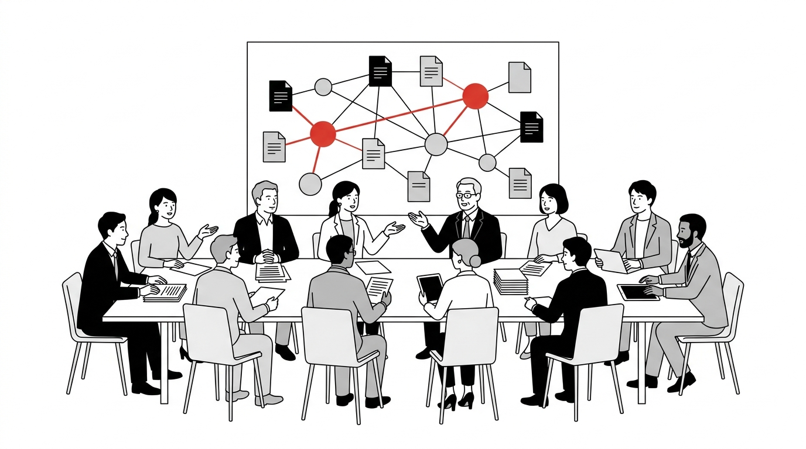

ACTIVITIES & ROADMAP
活動・ロードマップ
2026年2月の設立から、仕様の策定、実証事業、成果公表へ。研究会は「発足および基盤構築期」から「実証および成果公表期」へ進みます。

ACTIVITY OVERVIEW
官民で議論し、
成果を積み上げる。
設立総会から仕様策定、実証事業へ。研究の経過と判断材料を継続して公開し、参加者だけでなく社会からも活動が見える研究会を目指します。
- 設立
- 2026年2月9日
- 構成
- 企業・団体、自治体、有識者
- 最新成果
- 仕様書 Ver.1.0
- 公開方針
- 研究成果は原則公開
01 — ROADMAP
活動計画と成果物
02 — MEETINGS
会議の開催
全体会議とコアメンバー会議を定期的に開催しています。会議はリアルとオンラインのハイブリッドで実施し、資料は会員向けに共有します。
| 開催日 | 会議体 | 主な議題 |
|---|---|---|
| 2026.05.28 | 全体会議 | 仕様書 Ver.1.0 の確定と公開、実証事業の進め方 |
| 2026.05.21 | コアメンバー会議 | 仕様最終案の確認、カテゴリコードの検討 |
| 2026.04.23 | コアメンバー会議 | 活動計画の確認、実証・実装機会の共有 |
| 2026.02.09 | 設立総会 | 設立規約、活動計画、運営体制の承認 |
会員の皆さまは、Teams「公共AIナレッジ研究会」の全体ディスカッションチャンネルからもご意見をお寄せいただけます。
03 — WORKING GROUPS
いま議論していること
AGENDA 1
カテゴリコードの確定
4階層分類のL1〜L4コードは現時点で案です。自治体業務の実態に照らして、漏れなくダブりのない体系となるよう検討を進めています。
AGENDA 2
技術要件・接続方式
カタログサービス、MCPサーバー、認証・接続方式の要件を整理し、実証事業に向けた内部向け仕様として追加します。
AGENDA 3
持続可能な運用モデル
誰がナレッジベースを運用し、誰が費用を負担するのか。ビジネスモデルと役割分担を検討しています。
AGENDA 4
AI間連携・相互運用性
AIエージェント同士がナレッジを相互参照する将来を見据え、組織を越えた相互運用性のあり方を議論しています。